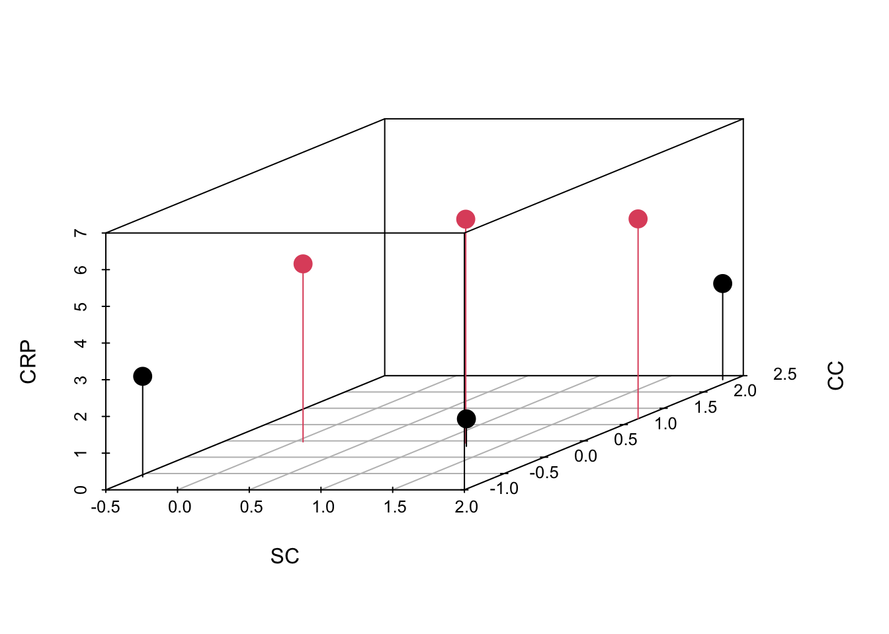
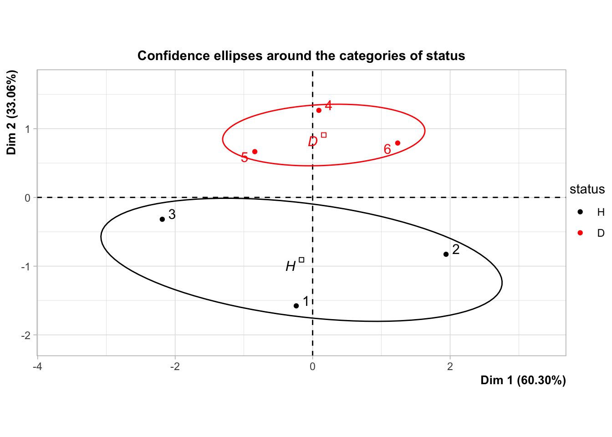
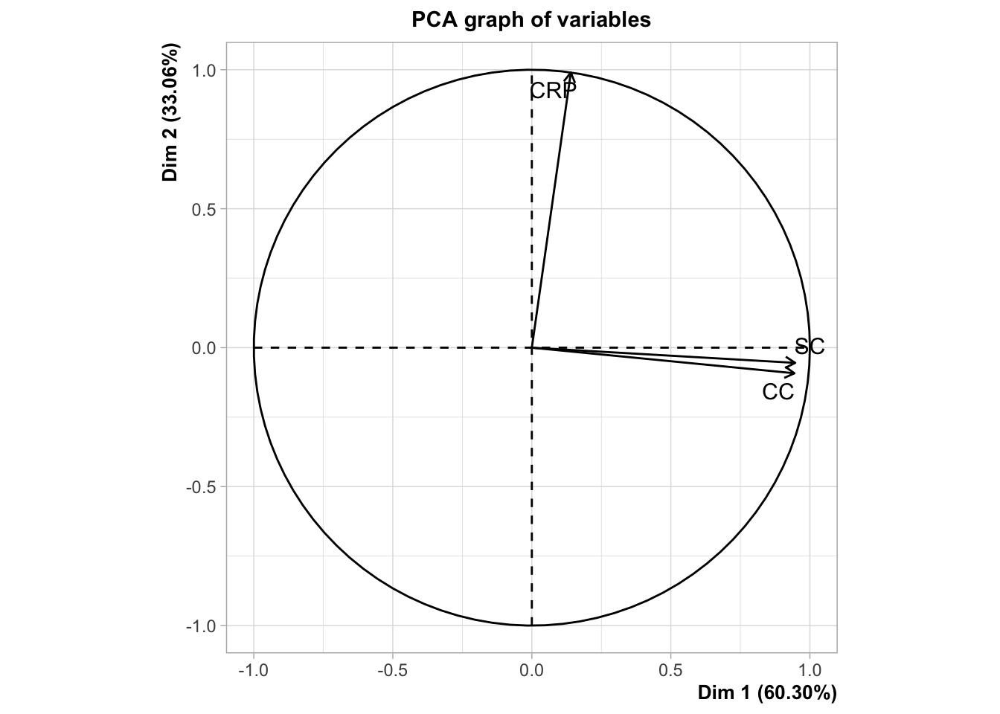

(Simulated) Data
I simulated a 3-dimensional dataset to illustrate this section. In this example, there are:
- 6 (simulated human) subjects, 3 of them are healthy, and 3 of them have [insert here your favorite auto-immune disease],
- 3 variables are measured on these subjects: CRP1, Serum Creatinine (SC)2, and Cystatin C (CC)3.
With this (somewhat not so realistic) example, I want to illustrate a situation where one variable stands alone (CRP) and the other two are very correlated, and at the same time, I want two groups of subjects that have very different mean CRPs. The values are reported in the table below.
| status | CRP | SC | CC |
|---|---|---|---|
| H | 2.111 | 0.9527 | 1.071 |
| H | 1.246 | 2.335 | 2.374 |
| H | 1.42 | 1.184 | -0.1509 |
| D | 7.517 | -0.229 | -0.3311 |
| D | 5.671 | 1.786 | 0.9783 |
| D | 4.535 | -0.02739 | 0.2584 |
Below is represented the correlation matrix as a correlogram.
And the 3D plot representing all the data is shown below.

I decided to use the functions from FactoMineR, but I could have used one of the many functions available in R: prcomp, ade4::dudi.pca, or even eigen or svd. The command is shown below.
res.pca <- FactoMineR::PCA(X = simul, scale.unit = TRUE, quali.sup = "status", graph = FALSE)To truly benefit from all the properties of PCA, we need the three following graphs.
Screeplot
The screeplot represents either the variances of the principal components (aka the eigenvalues of either the covariance or the correlation matrix) or, more commonly, the percentage of variance explained by each dimension. Its is used mainly to select the number of dimensions that would capture the most variance.
Individual map
Here the individual map shows my two clusters of subjects (healthy donors and patients), but they separate on the second dimension! It means that this information is not the main source of variability in the dataset. In other words: there is a block of two highly correlated variables that have (twice as) more weight as the variable that carries the information related to inflammatory disease.

Circle of correlation
Finally, the circle of correlation is very easy to interpret in my example (yey, simulations!): all the pointy ends of the arrows are close to the circle, so I can interpret their respective positions to one another and to the axes.
CRP is orthogonal to SC and CC (uncorrelated), which are themselves very close to one another (highly correlated). Plus, CRP values are higher in patients than in healthy donor, and the values of SC and CC are not really different between the two groups.

Footnotes
CRP (C-reactive protein) is a clinical marker of inflammation. “In healthy adults, the normal concentrations of CRP varies between 0.8 mg/L and 3.0 mg/L. (..) CRP concentrations between 2 and 10 mg/L are considered as metabolic inflammation[.]” Source: Wikipedia↩︎
“Serum creatinine (a blood measurement) is an important indicator of kidney function, because it is an easily measured byproduct of muscle metabolism that is excreted unchanged by the kidneys. (…) The reference interval is 0.6–1.3 mg/dL.” Source: Wikipedia↩︎
“Cystatin C (…) is mainly used as a biomarker of kidney function. (…) Across different studies, the mean reference interval (as defined by the 5th and 95th percentile) was between 0.52 and 0.98 mg/L.” Source: Wikipedia↩︎